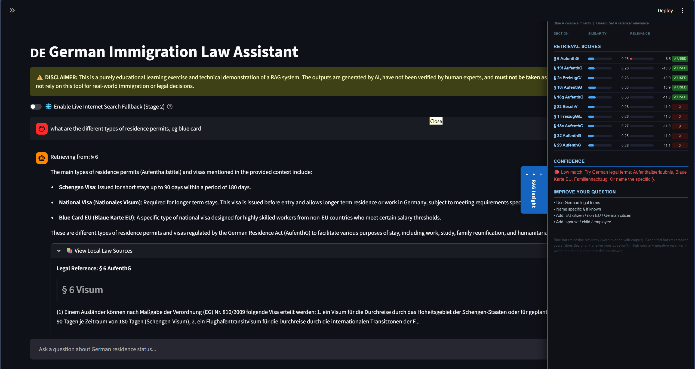

How I built a local AI legal assistant for German immigration law, what it took to get it right, and why “good enough” was never an option.
There is a moment most foreigners living in Germany will recognise. You are trying to understand a statutory condition for your visa or residence permit. You have the official government page open in one tab. You have a forum thread from 2021 open in another. You have asked a general-purpose AI assistant, which gave you a confident, well-structured answer citing a section of law that was amended two years ago.
None of these three sources agrees with the others.
I came from India, did my MBA in Germany, and stayed to build a career in Frankfurt. The immigration system I have navigated is genuinely complex. German residence law spans multiple statutes, each with distinct scopes and cross-referencing conditions. It is updated by legislation. And it is misrepresented constantly, both by outdated internet sources and by AI systems trained on data that predates the most recent reforms.
I built this project because I needed it. I also built it because the problem it addresses does not stop with my personal situation.
The first thing anyone asks when I describe this project is why I did not just upload the law to Claude or ChatGPT and ask my question.
It is a fair question. A frontier model with a large context window can ingest a legal document and answer questions about it reasonably well. For a one-off query, that is a perfectly rational approach.
But it is not the right architecture for anything that needs to be trusted, repeated, or used at scale. Here is why.
Frontier models hallucinate legal citations. Not occasionally. When legal text is complex, cross-referenced, and recently amended, a general-purpose model will sometimes generate section numbers that look plausible, cite provisions that have been replaced, or conflate two different legal regimes. The model is confident. The output looks correct. The error only surfaces when someone checks the actual statute.
A wrong answer in an immigration query is not a minor inconvenience. It can mean a rejected application, a missed condition, or a misunderstood right. A rejected application does not just cost time. For an employer, it means legal fees, delayed start dates, and direct financial liability. For the individual, it can mean months lost and a disrupted life plan. The stakes are simply not the same as getting a recipe slightly wrong.
Routing personal data to a cloud API is a choice with consequences. An immigration question carries nationality, employment status, family situation, and income details. These are sensitive personal data under GDPR. Sending them to a US-based cloud API in a casual query is a data governance decision that most people make without realising they are making it.
A tool you cannot explain is a tool you cannot trust. If the system gives you an answer, you need to be able to see exactly which section of law it drew from, read the German text yourself, and verify it. A general-purpose model gives you a response. This system shows you its work.
Those four constraints together defined the architecture before a single line of code was written.
The requirements that came out of that thinking were straightforward.
The system had to run entirely on local hardware. No query, no document, and no personal detail should ever leave the machine. This is not a performance optimisation. It is a data architecture decision grounded in GDPR, professional liability, and the basic principle that a legal query deserves the same confidentiality as a legal consultation.
The system had to be grounded in current statute text rather than trained on historical summaries. The actual law was downloaded directly from the German government’s statutory publication source, indexed, and made retrievable at the section level. When the law changes, you rebuild the index. The system’s knowledge does not drift.
Every answer had to show the source. I did not want a footnote or a general reference to the relevant act. The exact German text of the section it drew from needed to be visible alongside the answer, so the user could read it themselves.
The scope also had to be honest. German immigration law covers three statutes: the general residence act for third-country nationals, the free movement act for EU citizens, and the employment ordinance for work permit approvals. These are the three laws in the index. Questions about citizenship, asylum, or social benefits are outside scope. The system explicitly states its limitations when asked, rather than inventing an answer from adjacent knowledge.
That last point matters more than it sounds. A system that knows its limits and communicates them clearly is much more trustworthy than one that attempts to answer everything.
The core architecture is a retrieval-augmented generation pipeline. The concept is straightforward. Instead of relying on a model’s training memory, you retrieve the relevant text from a controlled corpus first. You then generate a response grounded only in what was retrieved. The model is not guessing. It is reading.
Chunking at the section boundary. Legal text cannot be chunked the way prose is chunked. A statutory condition often spans multiple subsections within a single paragraph. Requirements for a given permit type might state the qualification condition in one subsection, the salary threshold in another, and the exceptions in a third. If a chunk boundary falls between them, any retrieval that returns only one subsection is retrieving half a legal condition. The chunking strategy here splits the corpus at section headers. This guarantees one complete statutory section per chunk. The integrity of the legal unit is non-negotiable.
Cross-lingual retrieval. The corpus is in German. A user asking in English needs to retrieve chunks using German statutory vocabulary. The solution is a two-step approach. The query is first expanded into the German legal terms, section numbers, and statutory vocabulary that correspond to the question. That expanded query is what gets embedded and matched against the corpus.
Two-stage retrieval. The first stage is vector similarity, which is fast but approximate. It retrieves candidates based on embedding proximity, not necessarily on actual legal relevance. The second stage is a cross-encoder reranker. It takes the query and each retrieved candidate together and scores the genuine relevance of the pair. The top five sections from that second stage are what get passed to the language model. This two-stage approach was the single biggest driver of answer quality improvement in the project. It also adds seconds to the response time. This is a trade-off made deliberately. In a legal context, a user will wait fifteen seconds for a correct, private answer. They will not wait at all for a fast, wrong one.
Model choice is infrastructure, not identity. The language model is not the product here. It is just a component. The system is designed to run any locally-served model. The corpus coverage and retrieval quality remain constant regardless of which model generates the final response. The true intelligence of the system lives in the retrieval pipeline, not in the model weights.
Pipeline: offline build and per-query flow
Offline (build once)
feeds index ↓
Per query: on local hardware, no data leaves the machine

The RAG insight panel exists for one reason: transparency. It shows similarity scores and reranking scores side by side for every retrieved section. A user should be able to see exactly why a section was or was not included in the answer. That visibility is a core part of the trust contract.
Building a system is one thing. Knowing whether it works is another. Testing it requires stepping outside the builder’s perspective entirely.
I ran the system through a structured cross-evaluation using a set of questions a real user would ask. I checked these against the actual statute text to look for where the answers failed. This was not a test of latency or token throughput. It was a test of legal accuracy. Does the answer cite the right provision? Does it state the conditions correctly? Does it avoid inventing requirements that do not exist in the retrieved text?
The results were instructive. For straightforward queries, the system performed well. Eligibility conditions, the distinction between different legal regimes for EU versus non-EU nationals, and the routing between different statutes all came back with accurate citations and appropriate legal framing.
The failures were also clear. In some cases, the retrieval returned the right general area of law but the wrong section. In a small number of cases, the system cited a reference that did not correspond to what it actually retrieved. These were retrieval failures more than generation failures, but the output was wrong either way.
Those findings shaped the next round of architectural decisions. I implemented tighter reranking thresholds, added a second retrieval pass when confidence was low, and placed more explicit guardrails in the generation prompt around citation discipline.
The principle this established is worth naming clearly. Accuracy evaluation in a regulated domain cannot be done by the builder alone. The test questions need to come from someone who knows the domain well enough to catch a plausible but wrong answer. Technical benchmarks measure technical performance. They do not measure whether the answer is legally correct.
Retrieval-augmented generation with vector similarity search is effective for straightforward queries. It is not sufficient for complex legal reasoning.
The limitation is structural. A flat vector index retrieves sections based on semantic proximity to the query. It does not model how sections relate to each other. One provision might establish a general condition that another provision qualifies. A right established in one statute may be constrained by a cross-reference to another. A correct answer to a complex question sometimes requires reasoning across multiple sections in a specific sequence. Vector search alone cannot do that.
The next architectural layer will address this. A graph-based retrieval approach can explicitly represent the relationships between statutory sections. It tracks which sections cross-reference which, which provisions depend on conditions established elsewhere, and which legal regimes take precedence. By combining this with a reasoning agent that plans a multi-step retrieval strategy before generating an answer, the system can begin to handle the kind of multi-condition questions that currently expose the ceiling of the vector approach.
This is not a complete redesign. The existing pipeline remains intact: the chunking strategy, the embeddings, and the reranking logic. The graph layer will sit alongside the vector store, and a reasoning layer will decide which retrieval path is appropriate for each query. When you build the foundation right, extending it becomes a product decision rather than a total rebuild.
Coming from a background in business and finance rather than software engineering, I had to approach this architecture from first principles. I asked not how to build each component, but what each component needed to achieve. That constraint turned out to be useful. A few things are worth stating directly, because they get lost in most AI project write-ups.
The model is not the product. The retrieval architecture, the chunking strategy, the evaluation framework, and the honesty about scope: those are the product. The language model is one swappable component.
Demo quality and production quality are not the same thing. A system that produces plausible-looking answers in a demo can fail systematic accuracy review. The only way to know is to test it against the domain. There is no shortcut.
Scope discipline is a feature. A system that answers only what it knows, and says so clearly when it does not know, is more valuable than one that attempts to answer everything. This is true for AI systems and for consulting advice.
Privacy-preserving architecture is not a constraint. It is a competitive position. In regulated industries, the ability to deploy AI that keeps sensitive data on-premise is becoming a prerequisite, not a differentiator. Building with that assumption from the start is the right approach.
This project started as a personal tool for a personal problem. It became a useful exercise in what it actually takes to build an AI system that can be trusted in a domain where being wrong has consequences.
One thing worth being transparent about: the system design, architecture decisions, and testing were mine. The Python implementation was built using Claude Code and Gemini as coding assistants, working from the same architectural brief described in this post. That is also part of the point. You do not need to write every line yourself to understand what the system is doing and why.
I am still learning and exploring this space. If you have built something similar, spotted a better approach, or have thoughts on the architecture or the direction, I would genuinely like to hear it.
View on GitHub →